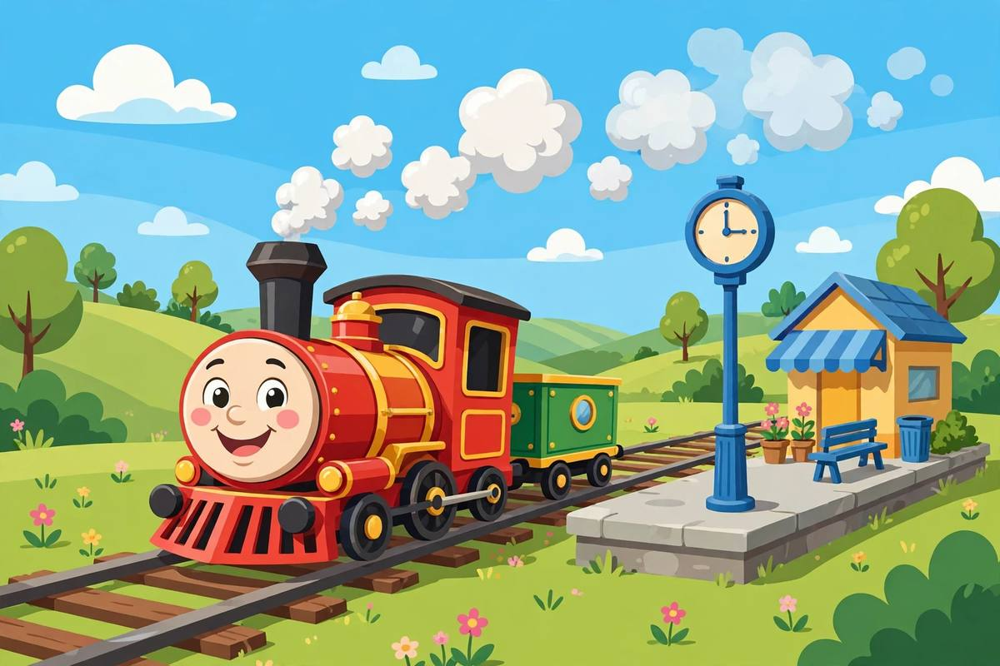

Train Jokes for Kids Ages 9 to 12

41 train jokes sit in one well known kids collection, and not one of them is sorted for a reader who is 9, 10, 11 or 12. Other lists run to 120 or even 200 plus puns and still set aside only a small section for kids. Worse, at least one page titled as train puns for kids parks a joke about a famous princess and a tunnel, plus a domestic caboose gag, right beside its knock-knocks. A parent cannot hand that page over unread. The set below is built for this age band only: every joke clean, every joke kind, and all of them sorted by pun family, so you can jump straight to the kind of wordplay you like best.
All aboard: the facts in one stop
- The first railway journey took place on 21 February 1804, when a steam locomotive in South Wales travelled nine miles. Trains have been collecting jokes ever since.
- The pun word box is small and mighty: trains, tracks, locomotives, stations, conductors, tickets and journeys do nearly all the work.
- Question and answer jokes suit this age band best, because listeners enjoy predicting the punchline before it arrives. Collections aimed at train fans note the same format works in classrooms, at family game nights and on long trips.
- The clean rule on this page is simple: no jokes about theft, no jokes at anyone’s expense, and nothing a grandparent would have to explain away.
Track words: on track, off track, sidetracked
Track is the hardest working word on the railway. A train stays on it, a runner races on it, and a good student stays on it during homework. Every joke in this family borrows one of those meanings and quietly swaps in another. Say the setup in your normal voice and let the swap do the work. Pausing for one beat before the punchline helps, because the listener needs a moment to hear both tracks at once.
- Why did the train bring a notebook to class? It wanted to improve its train of thought, one carriage at a time.
- What do you call a train that never forgets a promise? One with a perfect track record, polished daily and checked at every station.
- Why did the little engine refuse to hurry? It preferred to stay on track, wave at the fields, and arrive exactly when it meant to.
- What did the track say to the train? “We make a great team. Now kindly stop telling everyone you did it alone.”
- Why did the train join the chess club? It was brilliant at thinking several stops ahead and never rushing a move.
- What is a train’s favourite school event? Track and field day, where it finally gets to cheer instead of carrying everyone.
- Why did the train apologise to the timetable? It had wandered off track at the seaside and wanted to make up the time politely.
Station words: platforms, tickets and conductors
Stations give jokes their scenery. Platforms, ticket stubs, waiting room clocks and the conductor with the punch: every reader has stood in that scene, which means the setup needs almost no explaining. Conductor is the star word here, because it means the person who checks your ticket and the person who waves the baton in an orchestra. Two jobs, one uniform each, endless confusion.
- Why did the conductor carry a baton as well as a ticket punch? Weekdays on the railway, weekends with the orchestra, and the hat works for both.
- What do you call a train that delivers letters very quickly? The express post. It never stops for small talk, only for postboxes.
- Why did the ticket sign up for the gym? It wanted to travel in first class condition all the way to the seaside.
- What did the platform say to the waiting crowd? “Mind the gap, mind your manners, and the 10:15 will mind the rest.”
- Why did the carriage pack a blanket? Long journeys feel shorter with a cosy corner, a window seat and a good view.
- What is a station clock’s favourite kind of joke? One that arrives exactly on time, every single day, without being told twice.
- Why did the little local train wave at every village? It stopped everywhere anyway, so it made friends at every single platform.
Steam, whistles and choo-choo sounds
Sound jokes are the loudest family and the easiest to perform. A whistle already sounds like it is laughing. Steam means hot vapour on a locomotive and a temper in an ordinary sentence, and that one swap powers half the jokes at any station. Keep these friendly: the engine is cheerful, a little puffed, and proud of its whistle, never broken down and never cross for long.
- Why did the steam train bring its own kettle? It liked to let off steam properly, with a cup of tea and a short rest.
- Why did the engine join the choir? Its whistle already knew every high note on the whole route by heart.
- What was the baby train’s first word? Choo. Its second word was also choo, said louder, with both arms waving.
- Why did the driver polish the whistle every morning? A shiny whistle makes the whole platform smile before the train even arrives.
- Why did the train take three deep breaths at the station? It was building up a good head of steam for the long hill after lunch.
- What does a train order at the café? A tall glass of water. By noon it is always slightly steamed and ready for a refill.
Knock-knocks and one-liners for the platform
Knock-knock jokes run on names hidden inside sounds, and trains are full of sounds. Say the answer out loud before reading the punchline, because half of each joke lives in how it sounds. These are built for queues, platforms and the last ten minutes of a journey, where a joke has to board fast and get off cleanly.
- Knock, knock. Who’s there? Choo. Choo who? Choo-se the window seat, the view is better on this side.
- Knock, knock. Who’s there? Tara. Tara who? Tara-in is arriving, mind the doors and grab a seat.
- Knock, knock. Who’s there? Hugo. Hugo who? Hugo-ing to love this trip, it has snacks and a window.
- Why do trains make patient teachers? They repeat the same route cheerfully until every passenger knows it by heart.
- What did the last carriage say at the end of the line? “I brought up the rear, and I did it in style.”
Which train joke for which moment
- On an actual train ride → a station joke. The platform, the tickets and the clock are all right there, so the scene sets itself.
- In class, between lessons → a track word question and answer joke. The punchline can be guessed, which makes the whole row want a turn.
- A card for a train-mad cousin → a knock-knock. It fits in two lines of handwriting and invites the reader to perform half of it.
- Only ten seconds → a whistle one-liner. Skip anything with a long setup; a short toot survives a noisy corridor.
- A sleepy younger sibling → a steam joke, told slowly. Gentle engines and cups of tea are bedtime safe.
Train pun families compared
| Pun family | Key double meanings | Best audience | Tricky part |
|---|---|---|---|
| Track words | On track, track record, train of thought, sidetracked | Classmates who like guessing punchlines | The listener needs both meanings, so pause before the swap |
| Station words | Conductor, express, platform, first class | Anyone mid journey or fresh off one | Scene setting can run long, keep the setup to one line |
| Steam and sounds | Steam, whistle, choo, let off steam | Mixed-age family tables and younger siblings | Performance carries these, commit to the whistle noise |
| Knock-knocks | Names hidden in train sounds | Two tellers trading lines | Delivery is everything: two voices, no rushing |
Build your own train joke in three steps
- Pick one family. Track, station, or steam and sounds. One family per joke; two families in one punchline derail the whole thing.
- List three double-meaning words. Coach (a carriage, and a sports teacher), spring (a coil, and a season), express (a fast train, and saying something clearly). Circle the pair that surprises you most.
- Put a train in an everyday scene. A café, a classroom, a rainy platform. Write the plain sentence first, then move the second meaning to the very end, where punchlines live.
What success looks like: your listener guesses the punchline half a second before you say it, then tells the joke to someone else before the train reaches the next station.
, Rex Bennett, Entertainment Writer